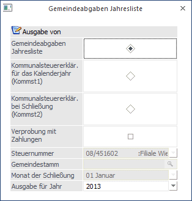

Die Gemeindeabgaben Jahresliste, die über den Menüpunkt
1 Auswertungen
1 Jahreslisten
1 Gemeindeabgaben Jahresliste
aufgerufen wird, kann für mehrere Optionen genutzt werden.

Ausgabe von
Hier kann eingestellt werden, welche Art von Auswertung für die Gemeinde erstellt werden soll:
ü Gemeindeabgaben Jahresliste
Mit
der Gemeindeabgaben Jahresliste werden die Bemessungen und die evtl. geltenden
Freibeträge bzw. die DG-Abgabe pro Monat gelistet. Die Jahresliste wird der im
Firmenstamm eingegebenen Gemeindenummer zugeordnet, wobei für jede Gemeinde eine
eigene Seite ausgegeben wird.
Achtung:
Die Werte für die Gemeindeabgaben - Jahresliste wird aus den vorhandenen Abrechnungen ermittelt. Dabei wird die in der Abrechnung hinterlegte Gemeindenummer als Zusammenfassungskriterium verwendet.
ü Kommunalsteuererklärung für das
Kalenderjahr (KommSt1)
Mit dieser Option wird die Kommunalsteuererklärung in
elektronischer Form erstellt, die in weiterer Folge an die FINANZOnline
übermittelt werden kann (von wo aus sie an die einzelnen Gemeinden
weitergeleitet werden). Alternativ dazu kann die KommSt-Erklärung auch
ausgedruckt werden (nur im Sonderfall möglich).
ü Kommunalsteuererklärung bei
Schließung (Kommst2)
Diese Meldung wird dann erstellt, wenn die letzte
Betriebsstätte in einer Gemeinde geschlossen wird. Auch diese Meldung wird in
weiterer Folge vie FINANZOnline übermittelt.
Je nachdem, welche Auswertung gewählt wird, können unterschiedliche Optionen gesetzt werden.
Ø Verprobung mit Zahlungen
Diese Option kann nur bei der Gemeindeabgaben Jahresliste gewählt werden. Wird diese Checkbox aktiviert, dann werden pro Monat die Zahlungen geladen. Damit können Differenzen zwischen berechneten und gezahlten Beträgen ermittelt werden können (wenn z.B. eine Rollung durchgeführt, diese aber bei den Zahlungen nicht berücksichtigt wurden).
Wie kommt man zu den Zahlungen?
Hier werden alle Zahlungen berücksichtigt, die bei der Auswertung der Abrechnung durch Aktivieren der Option "Zur Zahlung freigeben" erstellt und in weiterer Folge über den Menüpunkt Abschluss/Auszahlung im Register "Nebenkosten" bezahlt wurden. Manuell durchgeführte Zahlungen können hier nicht berücksichtigt werden - in dem Fall ist es auch nicht sinnvoll, die Option "Zahlungen ausgeben" zu aktivieren.
Bitte beachten Sie:
Vergleichen Sie die monatlich abgegebenen Summen mit den 12 Einzelzeilen dieser Liste. Sie ersehen daraus, ob gegebenenfalls Korrekturen und Nachverrechnungen der KommSt oder DG-Abgabe durchgeführt wurden.
Ø Steuernummer
Die Option Steuernummer kann nur bei der Meldung "KommSt1" oder "KommSt2" bearbeitet werden. Aus der Auswahllistbox kann ggf. eine Steuernummer ausgewählt werden, für die die entsprechende Meldung erstellt werden soll. Mit der Option "Alle" werden alle KommSt-Meldungen für alle Steuernummer durchgeführt bzw. erstellt.
Ø Gemeindestamm
Dieses Feld kann nur bei der Meldung "KommSt2" bearbeitet werden. Hier wird aus den Betriebsdaten die Gemeinde gewählt, in der die letzte Betriebsstätte geschlossen wird. Mit der Matchcode-Funktion (F9-Taste) kann nach allen angelegten Gemeinden gesucht werden.
Ø Monat der Schließung
Dieses Feld ist nur dann editierbar, wenn eine Meldung "Kommst2" erstellt wird. Hier muss das Monat eingetragen werden, in dem die letzte Betriebsstätte in der Gemeinde geschlossen wird.
Ø Ausgabe für Jahr
Aus dieser Auswahllistbox kann das Abrechnungsjahr ausgewählt werden, für das die Auswertung bzw. die KommSt-Erklärung durchgeführt werden soll. Es werden alle Jahre aufgelistet, für die Abrechnungen vorhanden sind.
Buttons

Ø Ausgabe Button
Hier kann entschieden werden, in welcher Form die Auswertung durchgeführt werden soll. Die Option "Bildschirm" und "Drucker" steht für alle 3 Möglichkeiten zur Verfügung.
Die Option "FINOnline" kann nur bei der "Kommunalsteuererklärung für das Kalenderjahr (Kommst1)" und bei der "Kommunalsteuererklärung bei Schließung (Kommst2)" angewählt werden. Dadurch wird im Unterverzeichnis " FINANZOnline" im Programmverzeichnis eine Datei KommSt1_XXXX_YYZZZZZZZZ.XML bzw. KommSt2_XXXX_YYZZZZZZZZ.XML (XXXX steht für die Mandantennummer, YY steht für die Finanzamtsnummer, ZZZZZZ steht für die Steuernummer) erstellt, die in weiterer Folge via FINANZOnline übermittelt werden kann. Zusätzlich dazu wird ein Protokoll erstellt, aus dem ersichtlich ist, welche Dateien mit welchen Inhalten erzeugt wurden.
Zusätzlich dazu wird das Fenster "FINANZ Online" geöffnet, von dem aus die Übermittlung der zuvor erstellten Datei durchgeführt werden kann.
Achtung:
Wenn die Option "Ausgabe für FINANZOnline" ausgewählt wurde, dann erfolgt auch eine Prüfung, ob die Stammdaten (Stammdaten/Mandantenstammdaten/Betriebsdaten) auch ordnungsgemäß angelegt sind. Zur ordnungsgemäßen Anlage gehört neben der Gemeindenummer auch der Gemeindeempfänger, in dem neben dem Namen zumindest die PLZ und der Ort ausgefüllt werden müssen. Auf eventuell fehlende Stammdaten weist das Programm mit einer Fehlermeldung und mit einem Fehlerprotokoll hin.
Ø Ende
Durch drücken des Ende Buttons oder der ESC Taste wird das Fenster geschossen.